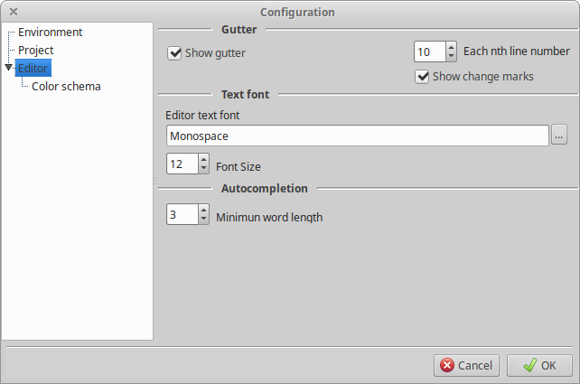

Source Editor Configuration

This section allows to configure how the source editor looks.
- Show gutter. The gutter is the leftmost area of the editor, and it shows
the line numbers and change marks.
- Each nth line number. Tells what line numbers to show. For example, if
it is 10 then only lines multiples of 10 will be shown (10, 20, 30, 40...).
The line were the cursor is is shown always.
- Editor text font. Shows the name of the text font used by the editor.
Click the button with the
... on the right to open the font selector dialog.
- Font size. Allows to change the font size. Note that it can be select
form the font selector dialog too.